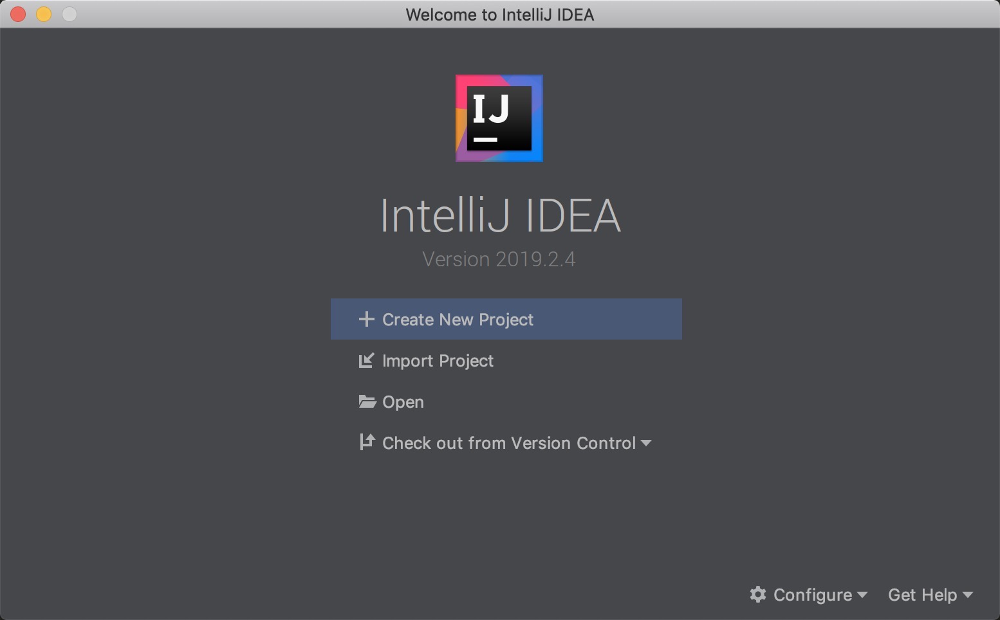
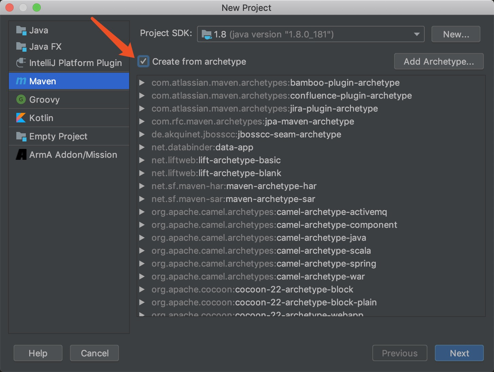
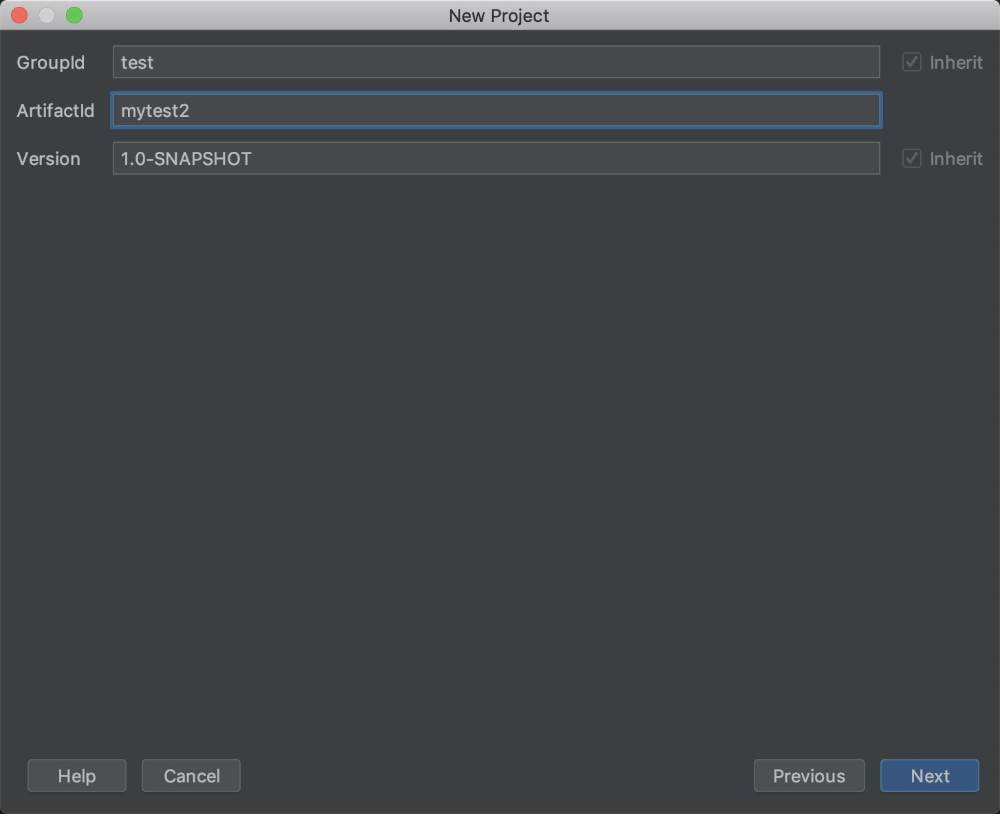
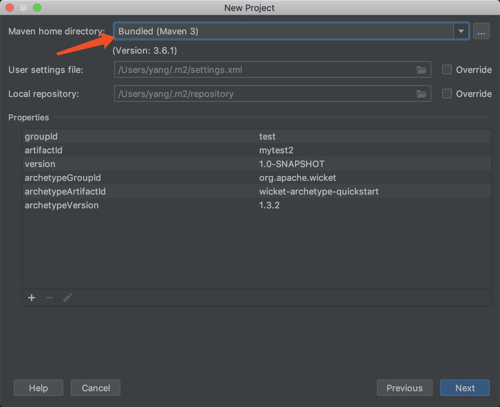
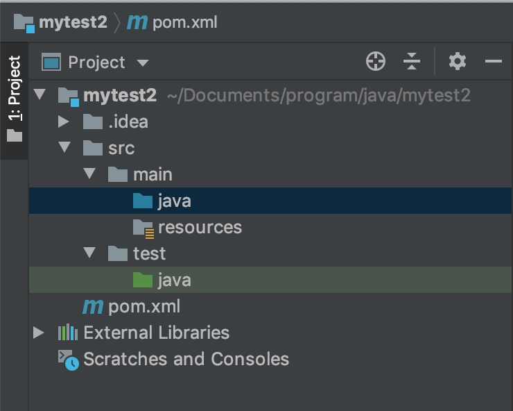
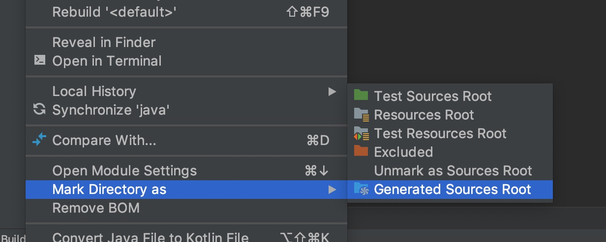
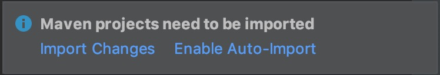
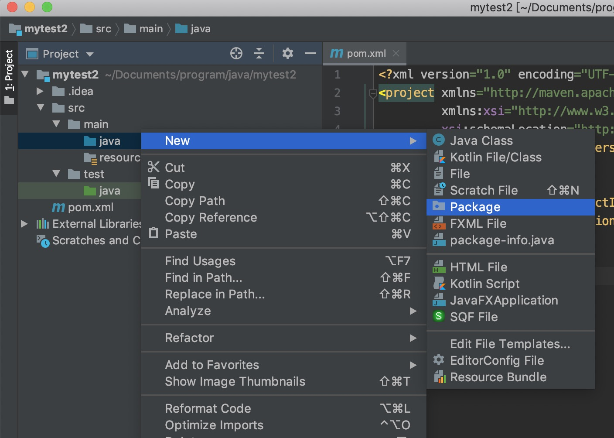

废话说几句
到现在为止，做java后端开发还不用spring boot的，简直就是自己折磨自己。想起以前用ssh框架，特别是在my eclipse 或 exlipse 下做java后端开发，效率很低，而且经常出一些低级错误（比如修改了代码，忘了编译并发送到tomcat等）。因为应用和web服务器是分离的，调试起来也比较麻烦，还好，spring boot出现之后，将开发变得简单起来
首先祭出官网
不管学什么，一定要从第一手资料上面去好好钻研，这样才够权威嘛。
比老的java开发牛逼在哪
我们先来瞧瞧传统java开发，到底是怎么折磨人的
传统java开发模式
- 首先，你需要下载
myeclipse （界面真心丑）
- 需要配置一堆 xml (struts.xml hibernate.xml ) 🙄🙄🙄
- 需要安装 tomcat，然后在
myeclipse 里面添加进去
- 修改完代码，
ctl + s 再将你的代码打包成 war 包，发布到 tomcat 下面
- 完成
看起来很简单，但是调试起来真的很麻烦呢，所以真的很佩服老java程序员的耐心与坚持
spring boot开发优势
- 创建独立的Spring应用程序
- 直接嵌入Tomcat，Jetty或Undertow（无需部署WAR文件）
- 提供”starter”依赖项，以简化构建配置（这个真心省事）
- 自动配置Spring和第三方库
- 提供生产级别的功能，例如指标，运行状况检查和外部配置
- 完全没有代码生成，也不需要XML配置
让我们开始
这里有一个官方的教程
这里我假设你已经准备好了下面几件事情
- 安装好了 Java JDK 1.8 以上的版本
- 安装好了 IDE，咱们这里统一用 IntelliJ IDEA Community 版（社区版够用了），没装的给你个传送门
新建项目
新建项目

选择maven，然后不要打钩，直接next

填好这两项，继续next

这里选择我自己装好了的maven，也可以使用idea内置的maven

完成之后，等一会，maven会从远程下载模板并创建，这个过程等一会，项目结构如下

可以看到java目录变成了蓝色，表示这是工程源码的根目录，如果没有变成蓝色，选中它点击右键，选择 Mark Directory as，并按下图指示选择

同样的 test 和 resources 目录也需要这样操作一下，但是需要选择相应的选项哈
至此，项目目录结构建好了，接下来我们修改下 pom.xml 来安装一些依赖
修改pom文件安装依赖
我们来看看刚刚生成好的pom.xml长啥样
1
2
3
4
5
6
7
8
9
10
11
| <?xml version="1.0" encoding="UTF-8"?>
<project xmlns="http://maven.apache.org/POM/4.0.0"
xmlns:xsi="http://www.w3.org/2001/XMLSchema-instance"
xsi:schemaLocation="http://maven.apache.org/POM/4.0.0 http://maven.apache.org/xsd/maven-4.0.0.xsd">
<modelVersion>4.0.0</modelVersion>
<groupId>test</groupId>
<artifactId>mytest2</artifactId>
<version>1.0-SNAPSHOT</version>
</project>
|
可以看到啥依赖都没有，只有一些项目的基础信息；现在我们添加spring boot相关依赖，添加好后的文件如下
1
2
3
4
5
6
7
8
9
10
11
12
13
14
15
16
17
18
19
20
21
22
23
24
25
26
27
28
29
30
31
32
33
34
35
36
37
38
39
40
41
42
43
44
45
46
47
48
49
50
51
52
53
54
55
| <?xml version="1.0" encoding="UTF-8"?>
<project xmlns="http://maven.apache.org/POM/4.0.0"
xmlns:xsi="http://www.w3.org/2001/XMLSchema-instance"
xsi:schemaLocation="http://maven.apache.org/POM/4.0.0 http://maven.apache.org/xsd/maven-4.0.0.xsd">
<modelVersion>4.0.0</modelVersion>
<groupId>test</groupId>
<artifactId>mytest2</artifactId>
<version>1.0-SNAPSHOT</version>
<parent>
<groupId>org.springframework.boot</groupId>
<artifactId>spring-boot-starter-parent</artifactId>
<version>2.2.1.RELEASE</version>
</parent>
<dependencies>
<dependency>
<groupId>org.springframework.boot</groupId>
<artifactId>spring-boot-starter</artifactId>
</dependency>
<dependency>
<groupId>org.springframework.boot</groupId>
<artifactId>spring-boot-starter-web</artifactId>
</dependency>
<dependency>
<groupId>org.springframework.boot</groupId>
<artifactId>spring-boot-starter-data-mongodb</artifactId>
</dependency>
<dependency>
<groupId>org.springframework.boot</groupId>
<artifactId>spring-boot-starter-websocket</artifactId>
</dependency>
</dependencies>
<build>
<plugins>
<plugin>
<groupId>org.apache.maven.plugins</groupId>
<artifactId>maven-site-plugin</artifactId>
<version>3.6</version>
</plugin>
<plugin>
<groupId>org.springframework.boot</groupId>
<artifactId>spring-boot-maven-plugin</artifactId>
</plugin>
</plugins>
</build>
</project>
|
修改后，右下角会出现下图这个对话框，选择 import changes 则IDE会自动去下载相关依赖

把代码跑起来
现在需要开始写点代码了，点击java目录，右键，新建一个package

新建Application.java并添加如下代码
1
2
3
4
5
6
7
8
9
10
11
| package com.test.test2;
import org.springframework.boot.SpringApplication;
import org.springframework.boot.autoconfigure.SpringBootApplication;
@SpringBootApplication
public class Application {
public static void main(String[] args) {
SpringApplication.run(Application.class, args);
}
}
|
直接将此main方法跑起来，就运行起来一个web服务器了，默认监听端口是8080
第一个接口
新建controller包，并增加一个UserController，代码如下
1
2
3
4
5
6
7
8
9
10
11
12
13
14
15
16
17
18
19
20
21
22
23
24
25
26
27
28
29
30
31
| package com.test.test2.controller;
import com.test.test2.entity.BaseResponse;
import org.slf4j.Logger;
import org.slf4j.LoggerFactory;
import org.springframework.web.bind.annotation.GetMapping;
import org.springframework.web.bind.annotation.PathVariable;
import org.springframework.web.bind.annotation.RequestMapping;
import org.springframework.web.bind.annotation.RestController;
import java.util.HashMap;
import java.util.Map;
@RestController
@RequestMapping("/user")
public class UserController {
private final static Logger logger = LoggerFactory.getLogger(UserController.class);
private Map<Integer, String> userMap = new HashMap<>();
{
userMap.put(0, "小明");
userMap.put(1, "小张");
}
@GetMapping("/{user_id}")
public BaseResponse getUser(@PathVariable("user_id") int userID) {
return BaseResponse.success(userMap.get(userID));
}
}
|
这里没有使用数据库，所以就用一个HashMap代替，这里的@PathVariable是路径(path)参数，使用下面命令可以测试这个接口
1
2
| $ curl localhost:8080/user/1
{"code":0,"errmsg":"","data":"小张"}
|
在UserController我们加了两个注解，@RequestMapping("/user")是作用于整个Controller类的，也就是在这个类下面的接口方法，都需要加上/user，上面的接口访问的例子里面已经体现出来了
而@RestController是Spring4.0之后引进的，这样在每个接口方法后面就不需要使用@RestController这个注解了，如果使用@Controller则任然需要加上@RestController注解
参数获取总结
上面例子使用了 @PathVariable 路径参数，那么还有哪些参数呢
Query String 参数 和 Form 参数
这两种都使用 @RequestParam 注解，当RequestMapping 为 @GetMapping 时，就为Query String参数，也就是url?后面的参数；当为 @PostMapping 时则为 Form 表单参数
1
2
3
4
5
| @GetMapping("/api/foos")
@ResponseBody
public String getFoos(@RequestParam String id) {
return "ID: " + id;
}
|
使用下面命令进行请求接口
1
2
3
| $ curl http://localhost:8080/api/foos?id=abc
----
ID: abc
|
Path（路径）参数
1
2
3
4
| @GetMapping("/{id}")
public @ResponseBody Book getBook(@PathVariable int id) {
}
|
参数绑定实体类型
不管是 Query String 参数，还是 Form 参数，都可以 绑定实体，只需要实体实现 java.io.Serializable 接口就行，不需要任何注解
1
2
3
4
| @GetMapping("/get")
public BaseResponse getUser(UserRequest req) {
return BaseResponse.success(req);
}
|
使用下面命令能正常访问
1
| curl 'localhost:8080/user/get?id=1&msg=123'
|
将GET换成POST
1
2
3
4
| @PostMapping("/post")
public BaseResponse post(UserRequest req) {
return BaseResponse.success(req);
}
|
用下面命令访问
1
| $ curl -X POST http://localhost:8080/user/post -d "id=1&msg=123"
|
先需要提交json参数，怎么办呢？也很简单，加@RequestBody注解就行了
1
2
3
4
| @PostMapping("/post")
public BaseResponse post(@RequestBody UserRequest req) {
return BaseResponse.success(req);
}
|
使用下面命令访问
1
| $ curl -X POST http://localhost:8080/user/post -H 'Content-type: application/json' -d '{"id":1,"msg":"123"}'
|
因为使用json，则需要添加请求头，否则Content-type默认是application/x-www-form-urlencoded